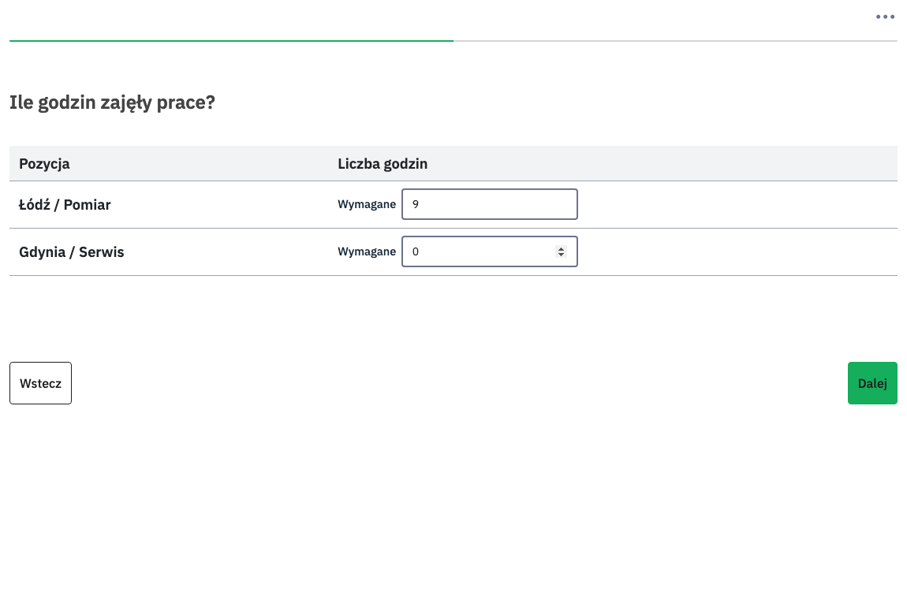

Dependent JSON questions for LimeSurvey
This plugin and three question themes work on a self-hosted LimeSurvey Community Edition installation. Respondents select locations, specify activities for each city, enter hours in a matrix and explain values above a threshold. Survey authors configure the questions in the admin interface. Each block uses one native response column of question type U. Data stays on the survey server.
Polski · GitHub releases · LimeControl catalogue
Try the two surveys
| Example | What to try | Files for your LimeSurvey installation |
|---|---|---|
| Fieldwork | Pick two locations and activities. Enter 9 and 0 hours. Explain the activity that took more than 8 hours. | Survey LSS · Expected CSV |
| Equipment readiness for class | Select devices in two locations. Record a battery level from 0 to 100%. Plan an action for each device at or below 20%. | Survey LSS · Expected CSV |
Open the English demo · Polish demo · Author guide
To run the demo offline, extract the entire demo archive and open demo/en/index.html in your browser. Both forms use files from the extracted project.
Version 0.2.0 adds optional inclusive minimum and maximum values to number columns. Install the four matching 0.2.0 packages to use the battery constraints in LimeSurvey. The fieldwork example also runs on version 0.1.0.

Install on your server
Use an administrator account with permission to install extensions. The installation must allow ZIP uploads and meet LimeSurvey's PHP extension requirements. The plugin requires PHP 8.1.29 or later. The LS 7.11.0 installer requires PHP 8.2.27 or later. Integration tests use PHP 8.3. 7.11.0 installer requirements
0.2.0 release candidate packages
| Edition | Plugin | Question themes |
|---|---|---|
| LS 6 | In Configuration, open Plugin manager. Upload the LimeControlJsonQuestions ZIP, confirm installation and activate the plugin. | In Configuration → Themes → Question themes, import each theme ZIP you need. |
| LS 7 | Open Plugins in the installation configuration, upload the plugin ZIP, confirm installation and select Activate. | Open Question themes, import the themes and check their availability on a Huge free text question. |
Download files from the same release, including SHA256SUMS. In the download directory run sha256sum -c SHA256SUMS or shasum -a 256 -c SHA256SUMS. The plugin ZIP contains the LimeControlJsonQuestions directory. The other archives are LcJsonChoice, LcJsonMatrix and LcJsonFollowup. Install all three themes to run the example.
Build your first survey
-
Import the example LSS. Open the survey administration settings and choose Tools → LimeControl JSON · Editor. In LS 7.11 with the new editor, Structure opens separately. To reach the Tools menu, open
index.php/surveyAdministration/rendersidemenulink/surveyid/SID/subaction/generalsettingson your installation and replaceSIDwith the survey ID. Inspect the source question for each block and the condition on the follow-up. -
To build it from scratch, add a native choice question called CITIES with Łódź and Gdynia as options. Add three subsequent Huge free text questions called WORK, TIME and REASON. Configure each block in the editor and save it.
Block Theme and source Settings WORK Choice for each item, CITIES Add MEASURE and SERVICE as multiple-choice options. TIME Table from previous answers, WORK Add a numeric HOURS column. REASON Follow-up, TIME Add OTHER with a required comment. Show the row when HOURS in its source is greater than 8. -
Activate a test copy. Choose English as the survey language. Select both cities, Measurement in Łódź and Service in Gdynia. Enter 9 and 0 hours respectively. Select Other for Łódź and enter Repeat measurement to reproduce the comment in the expected CSV. The threshold is only exceeded in Łódź.
-
Choose Export CSV and Codebook CSV in the survey tools. The example output shows stable codes, row paths, zero and a comment. Response IDs and revision identifiers depend on the installation and saved configuration.
Rules combine comparisons using all, any and not. Configure visibility, required values, exclusive options and required comments. The editor offers preceding supported native choice questions and JSON blocks as sources. Keep stable option and column codes when changing translations or updating a definition.
Configure and check the equipment survey
- Import
equipment.lss. In the survey admin tools, open the JSON editor. Inspect the three U questions in order.DEVICEStakes its rows from the native multiple-choice questionPLACES.CHARGEtakes its rows fromDEVICES.PLANtakes its rows fromCHARGE. - In
CHARGE, theBATTERYcolumn has type Number, Require a value, minimum 0 and maximum 100. Either limit may be omitted. InPLAN, the rule has action Show, target *, field source · BATTERY, operator At most and value 20. ItsACTIONcolumn is required text for each visible row. - Activate a test copy and follow the participant link. Choose English as the survey language. Select Library and Studio, then Tablet for the library and Camera for the studio. Enter 0 and 100 respectively. Type I will charge the tablet. in the action field for the tablet to match the sample CSV exactly. Finish the survey.
- In Tools → LimeControl JSON · Export CSV, find the five records for your response. The
CHARGErecord at path["LIBRARY","TABLET"]has columnBATTERYand numeric value0. ThePLANrecord at the same path has your text invalue. The camera produces no follow-up record. Usequestion_code,revisionandcolumnto match a cell to translated labels in Codebook CSV. - Try 20% and 21% to see the follow-up threshold. A value of 101% exceeds the allowed input range. If 101% is accepted, check the installed plugin version and column limits, then start a fresh response to exercise the new definition.
A path starts with the stable code of a selected native answer. Each choice block appends the selected option code when it supplies rows to the next question. A matrix or follow-up passes the path through. When building rules, source.CODE reads the corresponding upstream row, self.CODE reads the current row and source.count gives the total number of source rows. Show with target * controls the whole row, while Require a value with target * requires at least one active cell in it. A numeric zero counts as a value.
If the source list is empty, put a supported choice question (L, !, M or P) or a configured JSON block before the U question. To see dependent rows, preview the full survey and make an upstream selection. If your export contains a single serialized field, use the plugin's Export CSV in survey tools with both read and export permissions for responses.
Large surveys, data and removal
Each block uses one physical response column regardless of the number of visual cells. Other native questions still consume their usual columns. The tested 40 × 40 matrix used 33,622 bytes. The MySQL TEXT column allowed 65,535 bytes on the tested installations. On PostgreSQL the plugin limit was 2 MiB. For an encrypted MySQL field the plugin reserves space for the encrypted representation. Split it into smaller blocks if the size limit is reached. Native statistics and the standard response export treat type U as text. The plugin CSV exposes the individual values. The legacy report helps interpret historical answers from the EU-Consult themes. Completing an interactive block requires JavaScript and an active plugin.
Before upgrading, back up the survey, database and installed archives. Number columns created in 0.1.0 keep their previous behavior until you add a minimum or maximum in the editor and save the new definition. Check a new response against the limits, then resume a response with previously saved rows and compare both revisions in the export. Before removal, export the CSV and codebook, then use Detach theme and validation for the configured questions. For a complete uninstall, download a backup of the definitions, detach blocks starting with the last question in the chain and choose Delete retained configuration for each detached question. Deactivate the plugin and remove unused themes and the plugin in their respective managers. The native U questions and their saved responses belong to the survey. The plugin creates no tables.
Compatibility and development
The 0.2.0 candidate packages were tested on LimeSurvey CE 6.17.19 and 7.11.0 with PHP 8.3.28 and PostgreSQL 14.20. Both example surveys were completed on each installation, and the five exported cells per survey matched its expected CSV. The checks also covered saving numeric bounds in the editor, resuming a response and reading back a 40 × 40 matrix.
These results were obtained on fresh local installations using the four archives for version 0.1.0. Every configuration passed ZIP import, survey authoring, respondent completion and resume, and export of all 1,600 cells. Local qualification report
| LimeSurvey CE | PHP | Database | SQL columns before and after adding a 40 × 40 block | Result |
|---|---|---|---|---|
| 6.15.12 | 8.3.28 | MySQL 8.4.13 | 47 → 48 | Passed |
| 6.15.12 | 8.3.28 | PostgreSQL 17.11 | 47 → 48 | Passed |
| 6.17.19 | 8.3.28 | MySQL 8.4.13 | 47 → 48 | Passed |
| 6.17.19 | 8.3.28 | PostgreSQL 17.11 | 47 → 48 | Passed |
| 7.11.0+261116 | 8.3.28 | MySQL 8.4.13 | 48 → 49 | Passed |
| 7.11.0+261116 | 8.3.28 | PostgreSQL 17.11 | 48 → 49 | Passed |
The release also includes a repeat qualification on archives downloaded from GitHub Release. It records the actual PHP and database versions and all four ZIP checksums. Version 0.1.0 qualification report
composer install
npm ci
npx playwright install chromium
php tests/model.php
node tests/respondent.browser.cjs
node tests/respondent.parity.cjs
python3 scripts/package.py --tag v0.2.0 --output dist/0.2.0
python3 scripts/package.py --verify --output dist/0.2.0
python3 scripts/analyse.py /path/to/limesurvey/source
Licensed under GPL-2.0-or-later. Question themes extend LimeSurvey's native U question. Historical question themes by Łukasz Szemiako provided the original use cases. License · Security reporting